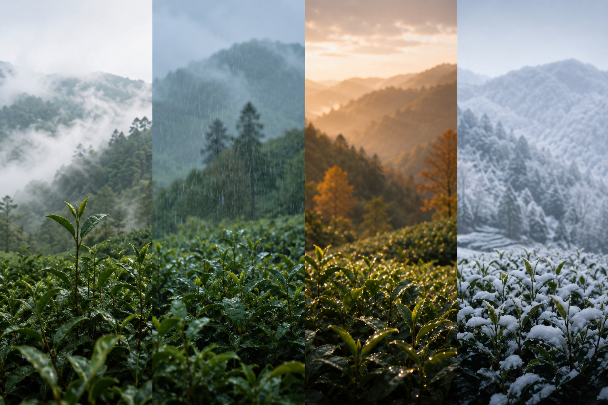

HUANGSHAN TEA · EST. 1875
源自黄山
传承百年茶事
云雾深处，
茶生山中。
高山气候与漫长时序，
让风味缓慢沉淀。
一叶入口，
尽是山野回甘。
SPRING WATER
山泉
入茶
源自皖南深山的天然山泉，
经岩层渗滤，清冽甘润。
好水，方能养出真正的好茶。
HIGH ALTITUDE
高山
慢养
云雾缓慢生长，
山风沉淀茶香。
时间，
让鲜醇自然发生。
DAY & NIGHT
昼夜
凝香
白昼云雾舒展茶芽，
夜晚山风沉淀茶香。
茶因此拥有更沉静的香气，
与更悠长的山野回甘。
WILD HARMONY
山野
共生
茶园隐于群山，远离城市喧嚣。
森林、山泉、云雾与茶树共生，
自然，便是最好的种植者。

FOUR SEASONS
四时
养茶
春雾、夏雨、秋露与冬藏，
让茶叶在四时流转中缓慢积蓄风味。
时间，最终沉淀为茶汤中的甘甜与层次。